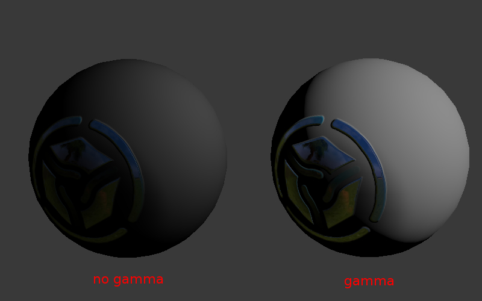

Гамма-коррекция и альфа-композитинг¶
Общее описание¶
Сущность гамма-коррекции заключается в упаковке яркости канала изображения в 8 битах информации.
Графические редакторы обычно работают в нелинейном цветовом пространстве, где тёмные компоненты кодируются большим числом битов чем светлые. Это означает, что значению 0.5 от реальной интенсивности света (физической величины, называемой освещённость) будет соответствовать большее значение, содержащееся в каналах RGB (в самом простом случае 0.5 ^ (1/2.2) = 0.73).
{kind=link}
Изображения всегда сохраняются в нелинейном пространстве, в противном случае 8 бит информации не достаточно для кодирования интенсивности света, что приведёт к тому, что тёмные тона будут отображаться некорректно.
Веб-браузеры работают в нелинейном пространстве.
Blender при настройке сцены Color Management > Display Device > sRGB работает в линейном пространстве. Значения цветов материалов и настройки источников света соответствует физическим величинам. При работе с текстурами, за исключением карт нормалей необходимо выставить настройку изображения Image > Input Color Space > sRGB. В этом случае при рендеринге будет производится автоматическая распаковка изображения: sRGB->Linear.
Движки и рендереры работают в линейном пространстве, поскольку только оно может адекватно представлять поведение света в реальном мире. Например, освещённость от двух одинаковых ламп будет ровно в два раза превышать освещённость только от одной.
Примеры величин освещённости:
| Описание | Освещённость, лк |
|---|---|
| Летом в полдень | 17 000 |
| Зимой в полдень | 5 000 |
| В пасмурный день | 1 000 |
| В светлой комнате | 100 |
| Ночью в полнолуние | 0.2 |
| В безлунную ночь | 0.001 |
Человеческое зрение, мониторы и гамма-коррекция¶
Человеческое восприятие света нелинейно (человек лучше различает градации тусклого света чем яркого), однако свет, поступающий в глаз, по-прежнему должен подчиняться физическим законам (см. пример с лампочками).
Мониторы с электронно-лучевыми трубками (ЭЛТ) имеют нелинейную характеристику яркости от приложенного к их входу электрического напряжения, которое, в свою очередь, определяется значением канала цветности в видеопамяти. Подобную же характеристику копируют жидкокристаллические мониторы. Тем не менее свет, излучаемый такими мониторами, по-прежнему должен подчиняться физическим законам. Например, в идеальном случае при добавлении второго источника света на сцену в виртуальном мире, яркость пикселей на экране монитора должна увеличиваться в два раза.
Таким образом, особенности восприятия человеческого глаза и технические характеристики мониторов имеют вторичное значение по отношению к гамма-коррекции.
Гамма¶
Используется в следующей упрощенной формуле:
Vout = Vinγ
γ < 1 - упаковывающая гамма, γ > 1 - распаковывающая гамма. В наиболее простом случае используются значения 1/2.2 и 2.2 соответственно. Далее вместо термина “гамма-коррекция” будут использованы термины “упаковка” (Linear -> sRGB) и “распаковка” (sRGB -> Linear).
Коррекция в нодовых материалах¶
Ноды для окраски¶
При использовании текстур и вертексных цветов для окраски (не в качестве масок), необходима распаковка (sRGB -> Linear). Нода текстуры реализует распаковку автоматически. Для вертексного цвета распаковку необходимо осуществлять явно, с помощью специальной ноды SRGB_TO_LINEAR.
Отметим, что альфа-канал ноды текстуры коррекции не подвергается, его значения находятся в линейном пространстве.
Ноды для масок¶
Текстуры и вертексные цвета могут использоваться в качестве масок, т.е. для смешения цветов или других математических операций. В таком случае в преобразованиях нет необходимости.
В случае текстуры, тем не менее, имеется нюанс: нода текстуры реализует распаковку автоматически. Это приводит к необходимости дополнительного преобразования обратно в нелинейное пространство, для чего используется нода LINEAR_TO_SRGB.
Карты нормалей¶
При использовании карт нормалей никакие преобразования не производятся.
Сводная таблица коррекции в нодовых материалах¶
| Случай использования | Коррекция |
|---|---|
| Текстура для окраски | реализуется автоматически в ноде текстуры (альфа-канал коррекции не подвергается) |
| Текстура для маски | LINEAR_TO_SRGB |
| Вертексный цвет для окраски | SRGB_TO_LINEAR |
| Вертексный цвет для маски | не требуется |
| Карта нормалей | не требуется |
Альфа-композитинг¶
Общие сведения¶
Физически корректный альфа-композитинг осуществляется по формуле [источник]:
\(C_o = C_a \alpha_a + C_b \alpha_b (1 - \alpha_a)\).
Формула отличается от классической операции смешивания (mix, выпуклая комбинация) наличием множителя \(\alpha_b\) во втором слагаемом. Таким образом, для осуществления альфа-композитинга должно быть известно не только значение \(\alpha_a\) пикселя-источника, но и значение \(\alpha_b\) пикселя, поверх которого осуществляется рендеринг.
В случае предварительного умножения значений \(\alpha\) на цветовые каналы (т.н. premultiplied alpha) формула принимает вид:
\(C_o = C_a + C_b (1 - \alpha_a)\).
Последняя формула используется также для расчёта результирующего значения \(\alpha_o\):
\(\alpha_o = \alpha_a + \alpha_b (1 - \alpha_a)\).
Предварительное умножение цветовых каналов на значения \(\alpha\) позволяет сэкономить две операции умножения. Еще более существенным является тот факт, что полученная формула может использоваться многократно, без необходимости деления цвета \(C_o\) на значение \(\alpha_o\) на каждой последующей итерации.
Реализация¶
Функция смешивания в движке Blend4Web имеет вид:
gl.blendFunc(gl.ONE, gl.ONE_MINUS_SRC_ALPHA);
Инициализация контекста WebGL производится с параметром premultipliedAlpha = true (что является значением по умолчанию). Кроме того, на выходе шейдеров производится умножение всех каналов цветности на значение \(\alpha\).